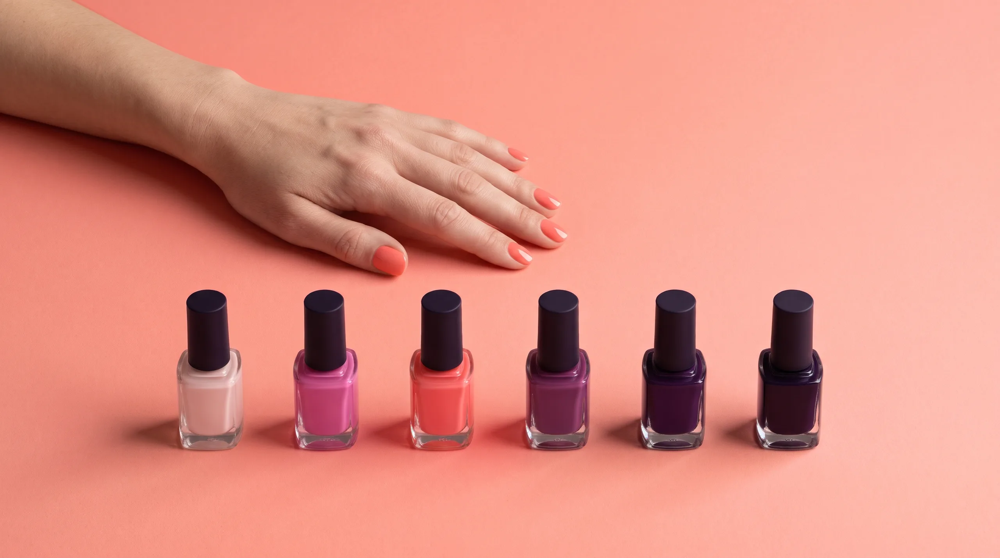
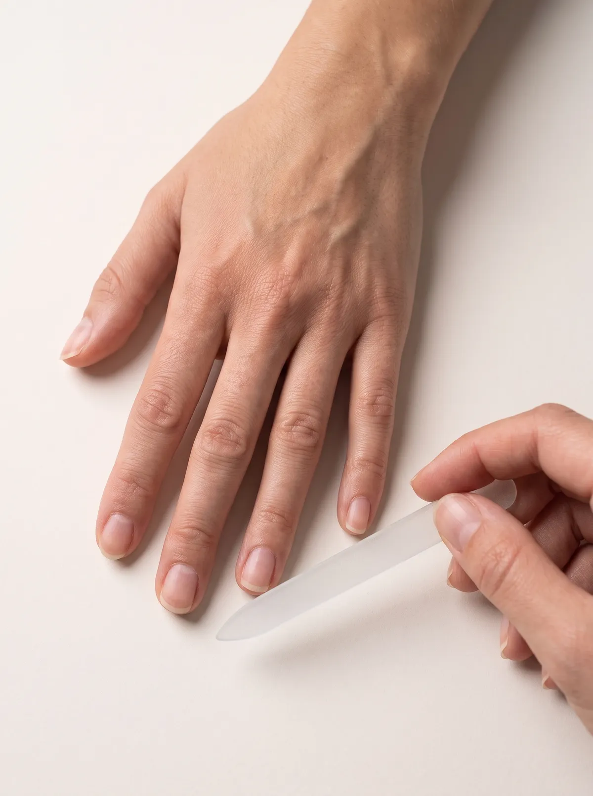
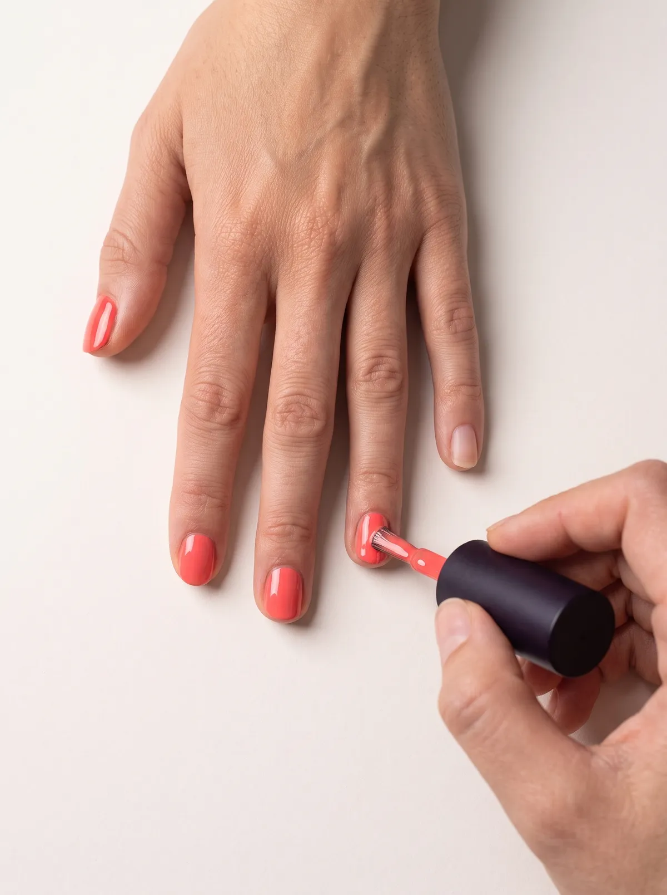
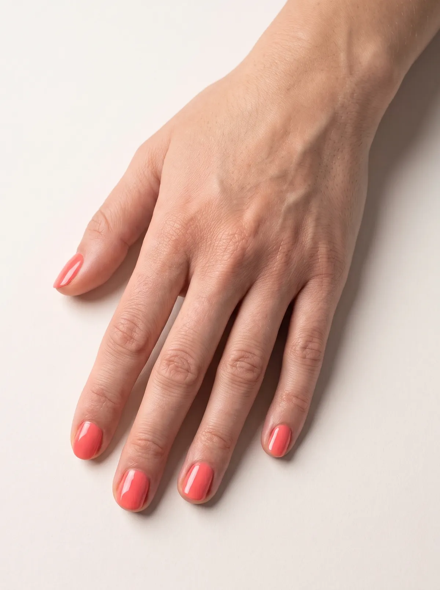

Nice New Nails: nail lacquer in six shades

Nail lacquer · 6 shades
Solstice
Glossy, chip-resistant colour. 12 ml.
Try it on
Solstice
Nice New Nails
Colour that talks back. Six shades, zero beige behaviour, and a gloss you can check your reflection in.
The collection
Pick a fight.
Pick a shade.
Same high-gloss formula, same 12 ml bottle, six very different moods. Hover a bottle to see it on the hand, then tap to try it on.
The formula
Thick. Glossy. Yours.
Keep scrolling. It pours in whatever shade you picked.



How to wear it
Three moves.
No smudges.
- 01
Prep
Push back the cuticles, file the edge and wipe each nail so the colour grips.
- 02
Two thin coats
One thin coat from base to tip, two minutes to set, then a second one.
- 03
Seal
A clear top coat over the colour and along the tip keeps the edge from chipping.
The proof
Same hand.
Different attitude.
Drag the line. Left is Solstice, right is Tuesday.
The small print, large
Everything you need.
Nothing you'll chip.
- 12mlHeavy glass bottle
- 6Shades, one finish
- 2Thin coats, base to tip
- $28A bottle, any colour
Worn out
Seen in the wild.
Drag it, throw it. Tap a photo to wear that shade.
Newsletter
New shades, first.
One email when a colour drops. Nothing else, ever.